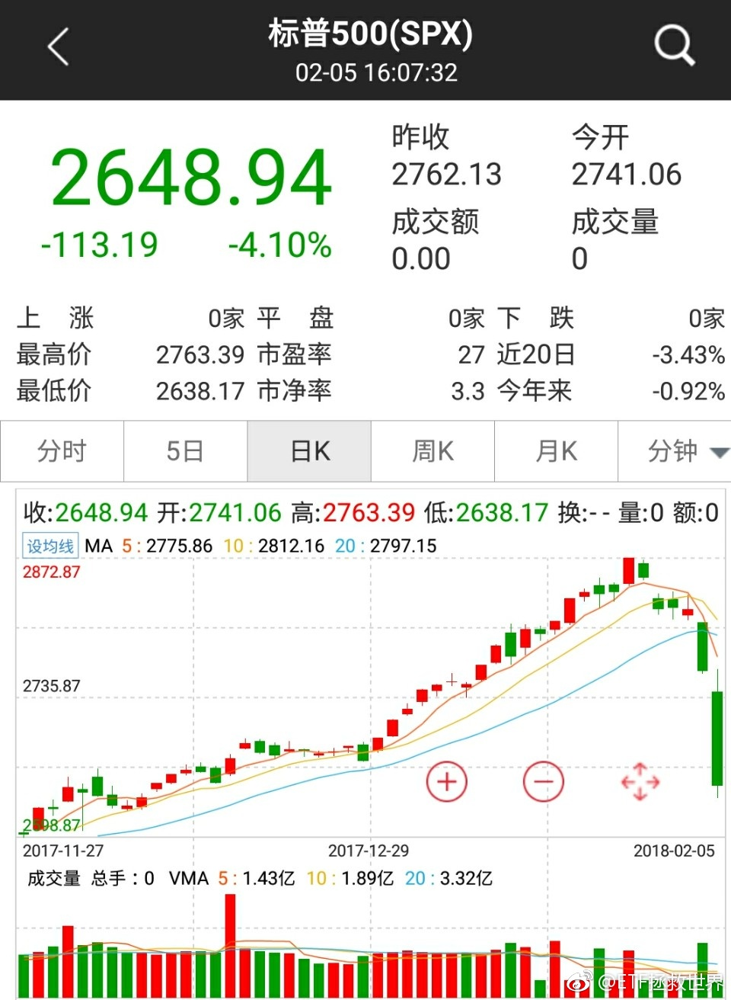

回复@Chaos怒了:500跌20%-25%我已经满仓。说到做到，做不到发一万块红包给你们。//@Chaos怒了:我估算500再跌20%-30%才到拼信仰的时候//@ETF拯救世界:回复@我在故快乐:讲真，现在还远没到拼信仰的时候……@ETF拯救世界:有没有闻到恐慌的气息。别人的，你自己的。
再说一次，指数基金不会死。而且我们买的都至少是不贵，有的已经算是便宜。给时间，一定会有好结果。第二，还有很多资金，会尽量将成本控制的比较低。第三，我相信绝大多数人每天减少的资产不会比我多。踏踏实实的。多大点事儿啊……@ETF拯救世界:有没有闻到恐慌的气息。别人的，你自己的。
回复@天影198:瞧瞧人家……//@天影198:中午出去吃泰国菜，想着EE还要在办公室算数据，想给你带个外卖🍗//@ETF拯救世界:想干，但是数据要15:30才算出来。中午试着弄一下盘中数据吧。不知道准不准。@ETF拯救世界:我急需开发一个盘中可以计算估值的工具。
再复习一次。现在有没有新的感悟，尤其是性子比较急的朋友。@ETF拯救世界:为什么要定时交易。我告诉你真正的原因。那就是资本市场的中短期不可预测性。我们的任务，是把手中有限的资源，最合理优化的分配到“低估”品种上。如果“觉得”，又或者是根据“数据”，只要便宜就买，贵了就卖，很可能买卖都在半山腰。金融交易不是数学题。便宜了就不会跌，贵了就不会涨？不存在的。便宜可能会更便宜，贵了可能会更贵。所以我们要容错。给它时间。时间是容错的一个非常有效的武器。不预测涨跌，只根据概率配置资源。
回复@用户6099242654:昨日505只标普500成分股中，有两只上涨。503只下跌。1946只罗素2000成分股中，87只上涨。//@用户6099242654:谁能来一个美股上涨跟下跌股票的比例？//@ETF拯救世界:回复@葫芦岛心灵的旅途:你这个想法非常大胆。负责任的告诉你，如果真的如此，必提前开卡车@ETF拯救世界:美国证 监会干嘛吃的，为什么不组织花旗高盛筹集资金救市。美联储为什么不投两万亿美金买道琼斯30。我看美国不行，迟早药丸。 
回复@葫芦岛心灵的旅途:你这个想法非常大胆。负责任的告诉你，如果真的如此，必提前开卡车//@葫芦岛心灵的旅途:迟早要买，我们也要买。 一个想法，不一定对。 中午跌狠了，有车加吗，比如中正500跌4%@ETF拯救世界:美国证 监会干嘛吃的，为什么不组织花旗高盛筹集资金救市。美联储为什么不投两万亿美金买道琼斯30。我看美国不行，迟早药丸。